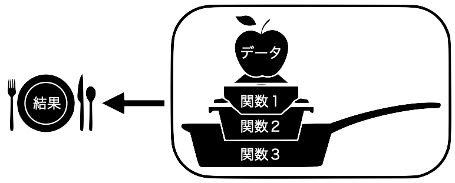
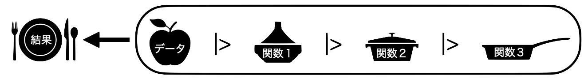
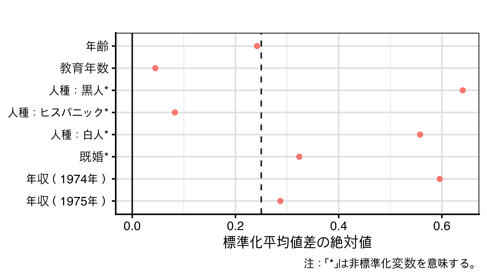

5/ Lab session
パイプ演算子（|>）：オブジェクトを関数の第一引数として渡す演算子
func(x, y)はx |> func(y)と同じ
print(mean(x, na.rm = TRUE))
x |> mean(na.rm = TRUE) |> print()


select()
rename()
relocate()
filter()
欠損値（missing value）：本来あるべき値が記録されていないこと
同じデータセットでも欠損値の表記方法は複数あり得るため、自分が生産したデータでない場合はコードブックを参照すること
999や-9などの数値、""（空欄）が欠損値を意味する場合、これらの値をRの欠損値（NA）に置換drop_na()やfilter()で欠損値を含む行を除去特定の値をNAに置換するreplace_with_na()関数（要{naniar}パッケージ）
ageは999、educは-9と-10が欠損値（femaleは欠損値が既にNAになっている）dfの中身 |
|||
| id | female | age | educ |
|---|---|---|---|
| 1 | 0 | 18 | 4 |
| 2 | 1 | 55 | 3 |
| 3 | 1 | 24 | -9 |
| 4 | 1 | 999 | -10 |
| 5 | 0 | 24 | 5 |
| 6 | NA | 39 | 4 |
library(naniar)
df |>
replace_with_na(list(age = 999,
educ = c(-9, -10)))
## # A tibble: 6 × 4
## id female age educ
## <int> <dbl> <dbl> <dbl>
## 1 1 0 18 4
## 2 2 1 55 3
## 3 3 1 24 NA
## 4 4 1 NA NA
## 5 5 0 24 5
## 6 6 NA 39 4filter()関数
drop_na()関数
必ず分析に使用するデータの記述統計量を報告すること
| 変数名 | 平均値 | 中央値 | 標準偏差 | 最小値 | 最大値 |
|---|---|---|---|---|---|
| 女性 | 0.503 | 1 | 0.500 | 0 | 1 |
| 年齢 | 47.340 | 47 | 15.628 | 18 | 75 |
| 投票有無 | |||||
| 投票 | 0.736 | 1 | 0.441 | 0 | 1 |
| 棄権 | 0.229 | 0 | 0.420 | 0 | 1 |
| 参政権なし | 0.035 | 0 | 0.184 | 0 | 1 |
| 感情温度 | |||||
| 自民党 | 41.130 | 50 | 28.015 | 0 | 100 |
| 立憲民主党 | 34.248 | 40 | 25.947 | 0 | 100 |
{cobalt}パッケージのbal.tab()を利用した標準化平均差の計算
## Balance Measures
## Type Diff.Un M.Threshold.Un
## age Contin. -0.2419 Not Balanced, >0.1
## educ Contin. 0.0448 Balanced, <0.1
## race_black Binary 0.6404 Not Balanced, >0.1
## race_hispan Binary -0.0827 Balanced, <0.1
## race_white Binary -0.5577 Not Balanced, >0.1
## married Binary -0.3236 Not Balanced, >0.1
## re74 Contin. -0.5958 Not Balanced, >0.1
## re75 Contin. -0.2870 Not Balanced, >0.1
##
## Balance tally for mean differences
## count
## Balanced, <0.1 2
## Not Balanced, >0.1 6
##
## Variable with the greatest mean difference
## Variable Diff.Un M.Threshold.Un
## race_black 0.6404 Not Balanced, >0.1
##
## Sample sizes
## Control Treated
## All 429 185bal.tab() + love.plot()を利用した可視化

formula：結果変数 ~ 説明変数1 + 説明変数2 + ...
data：結果変数および説明変数が格納されているデータフレーム名
データフレーム名 |> lm(formula, data = _)
weights：重み付け回帰分析の場合、重み変数の列名geom_bar()、またはgeom_col()
x、y
fillなどgeom_pointrange()
x、y、ymin、ymax（または、x、xmin、xmax、y）color、alpha、shpaeなどLab session